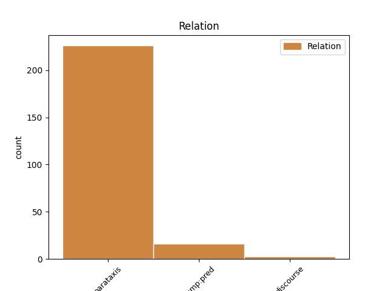
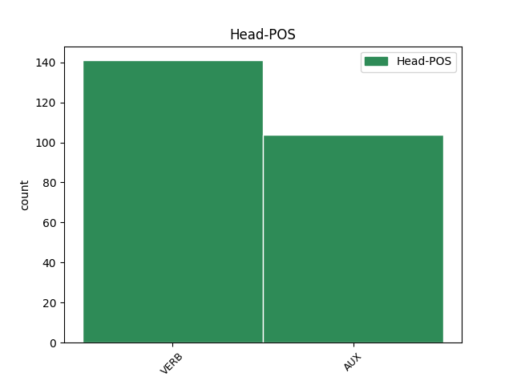
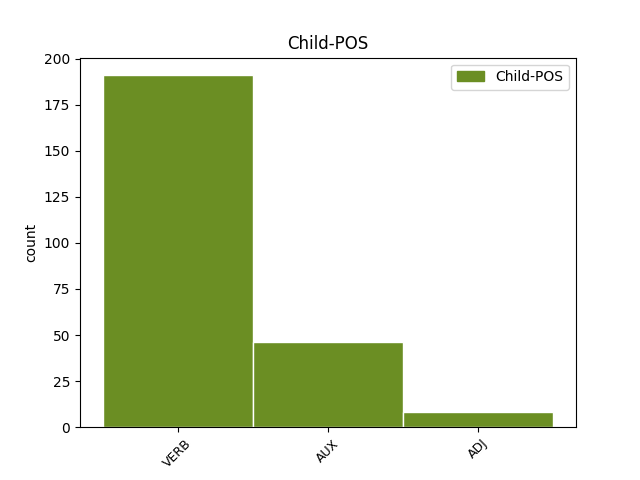

Distribution of features within this leaf



Agreement Rules sorted by frequency.
- When the dependent token is the parataxis(parataxis) of the head token, and the head token is VERB and the dependent token is VERB.
1 Sådana _ _ _ _ 0 _ _ _
2 saker _ _ _ _ 0 _ _ _
3 sa säga VERB PAST-ACT Mood=Ind|Tense=Past|VerbForm=Fin|Voice=Act 0 _ _ _
4 han _ _ _ _ 0 _ _ _
5 till _ _ _ _ 0 _ _ _
6 mor _ _ _ _ 0 _ _ _
7 , _ _ _ _ 0 _ _ _
8 jag _ _ _ _ 0 _ _ _
9 hörde höra VERB PAST-ACT Mood=Ind|Tense=Past|VerbForm=Fin|Voice=Act 3 parataxis _ _
10 honom _ _ _ _ 0 _ _ _
11 , _ _ _ _ 0 _ _ _
12 men _ _ _ _ 0 _ _ _
13 till _ _ _ _ 0 _ _ _
14 mig _ _ _ _ 0 _ _ _
15 sa _ _ _ _ 0 _ _ _
16 han _ _ _ _ 0 _ _ _
17 , _ _ _ _ 0 _ _ _
18 stående _ _ _ _ 0 _ _ _
19 vid _ _ _ _ 0 _ _ _
20 soluret _ _ _ _ 0 _ _ _
21 : _ _ _ _ 0 _ _ _
22 " _ _ _ _ 0 _ _ _
23 Jag _ _ _ _ 0 _ _ _
24 är _ _ _ _ 0 _ _ _
25 fyrtioett _ _ _ _ 0 _ _ _
26 och _ _ _ _ 0 _ _ _
27 havet _ _ _ _ 0 _ _ _
28 håller _ _ _ _ 0 _ _ _
29 på _ _ _ _ 0 _ _ _
30 att _ _ _ _ 0 _ _ _
31 dö _ _ _ _ 0 _ _ _
32 . _ _ _ _ 0 _ _ _
33 " _ _ _ _ 0 _ _ _
1 Och _ _ _ _ 0 _ _ _
2 som _ _ _ _ 0 _ _ _
3 aktris _ _ _ _ 0 _ _ _
4 var vara AUX PAST-ACT Mood=Ind|Tense=Past|VerbForm=Fin|Voice=Act 0 _ _ _
5 hon _ _ _ _ 0 _ _ _
6 mycket _ _ _ _ 0 _ _ _
7 bra _ _ _ _ 0 _ _ _
8 : _ _ _ _ 0 _ _ _
9 hon _ _ _ _ 0 _ _ _
10 gick gå VERB PAST-ACT Mood=Ind|Tense=Past|VerbForm=Fin|Voice=Act 4 parataxis _ _
11 över _ _ _ _ 0 _ _ _
12 till _ _ _ _ 0 _ _ _
13 jiddisch _ _ _ _ 0 _ _ _
14 , _ _ _ _ 0 _ _ _
15 till _ _ _ _ 0 _ _ _
16 italienska _ _ _ _ 0 _ _ _
17 , _ _ _ _ 0 _ _ _
18 till _ _ _ _ 0 _ _ _
19 tyska _ _ _ _ 0 _ _ _
20 , _ _ _ _ 0 _ _ _
21 betonade _ _ _ _ 0 _ _ _
22 och _ _ _ _ 0 _ _ _
23 gestikulerade _ _ _ _ 0 _ _ _
24 , _ _ _ _ 0 _ _ _
25 än _ _ _ _ 0 _ _ _
26 förvandlade _ _ _ _ 0 _ _ _
27 hon _ _ _ _ 0 _ _ _
28 sig _ _ _ _ 0 _ _ _
29 till _ _ _ _ 0 _ _ _
30 en _ _ _ _ 0 _ _ _
31 grupp _ _ _ _ 0 _ _ _
32 åldrade _ _ _ _ 0 _ _ _
33 judar _ _ _ _ 0 _ _ _
34 , _ _ _ _ 0 _ _ _
35 än _ _ _ _ 0 _ _ _
36 var _ _ _ _ 0 _ _ _
37 hon _ _ _ _ 0 _ _ _
38 en _ _ _ _ 0 _ _ _
39 rädd _ _ _ _ 0 _ _ _
40 liten _ _ _ _ 0 _ _ _
41 pojke _ _ _ _ 0 _ _ _
42 . _ _ _ _ 0 _ _ _
1 Och _ _ _ _ 0 _ _ _
2 som _ _ _ _ 0 _ _ _
3 aktris _ _ _ _ 0 _ _ _
4 var _ _ _ _ 0 _ _ _
5 hon _ _ _ _ 0 _ _ _
6 mycket _ _ _ _ 0 _ _ _
7 bra _ _ _ _ 0 _ _ _
8 : _ _ _ _ 0 _ _ _
9 hon _ _ _ _ 0 _ _ _
10 gick _ _ _ _ 0 _ _ _
11 över _ _ _ _ 0 _ _ _
12 till _ _ _ _ 0 _ _ _
13 jiddisch _ _ _ _ 0 _ _ _
14 , _ _ _ _ 0 _ _ _
15 till _ _ _ _ 0 _ _ _
16 italienska _ _ _ _ 0 _ _ _
17 , _ _ _ _ 0 _ _ _
18 till _ _ _ _ 0 _ _ _
19 tyska _ _ _ _ 0 _ _ _
20 , _ _ _ _ 0 _ _ _
21 betonade _ _ _ _ 0 _ _ _
22 och _ _ _ _ 0 _ _ _
23 gestikulerade _ _ _ _ 0 _ _ _
24 , _ _ _ _ 0 _ _ _
25 än _ _ _ _ 0 _ _ _
26 förvandlade förvandla VERB PAST-ACT Mood=Ind|Tense=Past|VerbForm=Fin|Voice=Act 0 _ _ _
27 hon _ _ _ _ 0 _ _ _
28 sig _ _ _ _ 0 _ _ _
29 till _ _ _ _ 0 _ _ _
30 en _ _ _ _ 0 _ _ _
31 grupp _ _ _ _ 0 _ _ _
32 åldrade _ _ _ _ 0 _ _ _
33 judar _ _ _ _ 0 _ _ _
34 , _ _ _ _ 0 _ _ _
35 än _ _ _ _ 0 _ _ _
36 var vara AUX PAST-ACT Mood=Ind|Tense=Past|VerbForm=Fin|Voice=Act 26 parataxis _ _
37 hon _ _ _ _ 0 _ _ _
38 en _ _ _ _ 0 _ _ _
39 rädd _ _ _ _ 0 _ _ _
40 liten _ _ _ _ 0 _ _ _
41 pojke _ _ _ _ 0 _ _ _
42 . _ _ _ _ 0 _ _ _
1 Hans _ _ _ _ 0 _ _ _
2 farkost _ _ _ _ 0 _ _ _
3 var vara AUX PAST-ACT Mood=Ind|Tense=Past|VerbForm=Fin|Voice=Act 0 _ _ _
4 nattens _ _ _ _ 0 _ _ _
5 , _ _ _ _ 0 _ _ _
6 farkosten _ _ _ _ 0 _ _ _
7 på _ _ _ _ 0 _ _ _
8 oljeblanka _ _ _ _ 0 _ _ _
9 vatten _ _ _ _ 0 _ _ _
10 , _ _ _ _ 0 _ _ _
11 hans _ _ _ _ 0 _ _ _
12 var vara AUX PAST-ACT Mood=Ind|Tense=Past|VerbForm=Fin|Voice=Act 3 parataxis _ _
13 ljuset _ _ _ _ 0 _ _ _
14 som _ _ _ _ 0 _ _ _
15 glimmade _ _ _ _ 0 _ _ _
16 i _ _ _ _ 0 _ _ _
17 mörkret _ _ _ _ 0 _ _ _
18 , _ _ _ _ 0 _ _ _
19 kom _ _ _ _ 0 _ _ _
20 hem _ _ _ _ 0 _ _ _
21 , _ _ _ _ 0 _ _ _
22 kom _ _ _ _ 0 _ _ _
23 hem _ _ _ _ 0 _ _ _
24 . _ _ _ _ 0 _ _ _
1 När _ _ _ _ 0 _ _ _
2 de _ _ _ _ 0 _ _ _
3 var vara AUX PAST-ACT Mood=Ind|Tense=Past|VerbForm=Fin|Voice=Act 0 _ _ _
4 framme _ _ _ _ 0 _ _ _
5 backade backa VERB PAST-ACT Mood=Ind|Tense=Past|VerbForm=Fin|Voice=Act 3 comp:pred _ _
6 far _ _ _ _ 0 _ _ _
7 in _ _ _ _ 0 _ _ _
8 på _ _ _ _ 0 _ _ _
9 ett _ _ _ _ 0 _ _ _
10 lastområde _ _ _ _ 0 _ _ _
11 och _ _ _ _ 0 _ _ _
12 farmor _ _ _ _ 0 _ _ _
13 steg _ _ _ _ 0 _ _ _
14 fram _ _ _ _ 0 _ _ _
15 ur _ _ _ _ 0 _ _ _
16 skuggorna _ _ _ _ 0 _ _ _
17 . _ _ _ _ 0 _ _ _
1 Europeiska _ _ _ _ 0 _ _ _
2 unionens _ _ _ _ 0 _ _ _
3 ekonomiska _ _ _ _ 0 _ _ _
4 intressen _ _ _ _ 0 _ _ _
5 i _ _ _ _ 0 _ _ _
6 Hongkong _ _ _ _ 0 _ _ _
7 är vara AUX PRES-ACT Mood=Ind|Tense=Pres|VerbForm=Fin|Voice=Act 0 _ _ _
8 såväl _ _ _ _ 0 _ _ _
9 omfattande omfattande ADJ NDE Case=Nom|Tense=Pres|VerbForm=Part 7 comp:pred _ _
10 som _ _ _ _ 0 _ _ _
11 djupt _ _ _ _ 0 _ _ _
12 rotade _ _ _ _ 0 _ _ _
13 . _ _ _ _ 0 _ _ _
1 Vi _ _ _ _ 0 _ _ _
2 hörde _ _ _ _ 0 _ _ _
3 en _ _ _ _ 0 _ _ _
4 lastbil _ _ _ _ 0 _ _ _
5 komma _ _ _ _ 0 _ _ _
6 bakifrån _ _ _ _ 0 _ _ _
7 och _ _ _ _ 0 _ _ _
8 mor _ _ _ _ 0 _ _ _
9 berättade _ _ _ _ 0 _ _ _
10 att _ _ _ _ 0 _ _ _
11 det _ _ _ _ 0 _ _ _
12 var _ _ _ _ 0 _ _ _
13 ett _ _ _ _ 0 _ _ _
14 TV-team _ _ _ _ 0 _ _ _
15 som _ _ _ _ 0 _ _ _
16 kom _ _ _ _ 0 _ _ _
17 , _ _ _ _ 0 _ _ _
18 något _ _ _ _ 0 _ _ _
19 som _ _ _ _ 0 _ _ _
20 jag _ _ _ _ 0 _ _ _
21 tyckte tycka VERB PAST-ACT Mood=Ind|Tense=Past|VerbForm=Fin|Voice=Act 0 _ _ _
22 var vara AUX PAST-ACT Mood=Ind|Tense=Past|VerbForm=Fin|Voice=Act 21 comp:pred _ _
23 spännande _ _ _ _ 0 _ _ _
24 eftersom _ _ _ _ 0 _ _ _
25 jag _ _ _ _ 0 _ _ _
26 aldrig _ _ _ _ 0 _ _ _
27 hade _ _ _ _ 0 _ _ _
28 sett _ _ _ _ 0 _ _ _
29 en _ _ _ _ 0 _ _ _
30 TV _ _ _ _ 0 _ _ _
31 . _ _ _ _ 0 _ _ _
1 Jag _ _ _ _ 0 _ _ _
2 rörde _ _ _ _ 0 _ _ _
3 mig _ _ _ _ 0 _ _ _
4 i _ _ _ _ 0 _ _ _
5 en _ _ _ _ 0 _ _ _
6 svart _ _ _ _ 0 _ _ _
7 springares _ _ _ _ 0 _ _ _
8 räta _ _ _ _ 0 _ _ _
9 vinklar _ _ _ _ 0 _ _ _
10 över _ _ _ _ 0 _ _ _
11 linjerna _ _ _ _ 0 _ _ _
12 , _ _ _ _ 0 _ _ _
13 men _ _ _ _ 0 _ _ _
14 utöver _ _ _ _ 0 _ _ _
15 några _ _ _ _ 0 _ _ _
16 uppskattande _ _ _ _ 0 _ _ _
17 affärsmän _ _ _ _ 0 _ _ _
18 fanns _ _ _ _ 0 _ _ _
19 det _ _ _ _ 0 _ _ _
20 ingen _ _ _ _ 0 _ _ _
21 där _ _ _ _ 0 _ _ _
22 som _ _ _ _ 0 _ _ _
23 verkade verka VERB PAST-ACT Mood=Ind|Tense=Past|VerbForm=Fin|Voice=Act 0 _ _ _
24 intresserad intresserad ADJ POS-SG-IND Case=Nom|Definite=Ind|Gender=Com|Number=Sing|Tense=Past|VerbForm=Part 23 comp:pred _ _
25 av _ _ _ _ 0 _ _ _
26 mig _ _ _ _ 0 _ _ _
27 . _ _ _ _ 0 _ _ _
1 Om _ _ _ _ 0 _ _ _
2 du _ _ _ _ 0 _ _ _
3 till _ _ _ _ 0 _ _ _
4 exempel _ _ _ _ 0 _ _ _
5 har _ _ _ _ 0 _ _ _
6 en _ _ _ _ 0 _ _ _
7 försäljningsrapport _ _ _ _ 0 _ _ _
8 som _ _ _ _ 0 _ _ _
9 du _ _ _ _ 0 _ _ _
10 vill vilja AUX PRES-AUX Mood=Ind|Tense=Pres|VerbForm=Fin|Voice=Act 0 _ _ _
11 ska skola AUX PRES-AUX Mood=Ind|Tense=Pres|VerbForm=Fin|Voice=Act 10 comp:pred _ _
12 vara _ _ _ _ 0 _ _ _
13 tillgänglig _ _ _ _ 0 _ _ _
14 på _ _ _ _ 0 _ _ _
15 webben _ _ _ _ 0 _ _ _
16 , _ _ _ _ 0 _ _ _
17 kan _ _ _ _ 0 _ _ _
18 du _ _ _ _ 0 _ _ _
19 spara _ _ _ _ 0 _ _ _
20 rapporten _ _ _ _ 0 _ _ _
21 som _ _ _ _ 0 _ _ _
22 en _ _ _ _ 0 _ _ _
23 dataåtkomstsida _ _ _ _ 0 _ _ _
24 i _ _ _ _ 0 _ _ _
25 stället _ _ _ _ 0 _ _ _
26 för _ _ _ _ 0 _ _ _
27 att _ _ _ _ 0 _ _ _
28 skapa _ _ _ _ 0 _ _ _
29 en _ _ _ _ 0 _ _ _
30 dataåtkomstsida _ _ _ _ 0 _ _ _
31 och _ _ _ _ 0 _ _ _
32 anpassa _ _ _ _ 0 _ _ _
33 den _ _ _ _ 0 _ _ _
34 för _ _ _ _ 0 _ _ _
35 att _ _ _ _ 0 _ _ _
36 likna _ _ _ _ 0 _ _ _
37 försäljningsrapporten _ _ _ _ 0 _ _ _
38 . _ _ _ _ 0 _ _ _
1 Det _ _ _ _ 0 _ _ _
2 är vara AUX PRES-ACT Mood=Ind|Tense=Pres|VerbForm=Fin|Voice=Act 0 _ _ _
3 allt _ _ _ _ 0 _ _ _
4 ett _ _ _ _ 0 _ _ _
5 snyggt _ _ _ _ 0 _ _ _
6 sällskap _ _ _ _ 0 _ _ _
7 de _ _ _ _ 0 _ _ _
8 här _ _ _ _ 0 _ _ _
9 kolonialtjänstemännen _ _ _ _ 0 _ _ _
10 – _ _ _ _ 0 _ _ _
11 tycker tycka VERB PRES-ACT Mood=Ind|Tense=Pres|VerbForm=Fin|Voice=Act 2 discourse _ _
12 ni _ _ _ _ 0 _ _ _
13 inte _ _ _ _ 0 _ _ _
14 ? _ _ _ _ 0 _ _ _
15 fortsatte _ _ _ _ 0 _ _ _
16 han _ _ _ _ 0 _ _ _
17 på _ _ _ _ 0 _ _ _
18 mycket _ _ _ _ 0 _ _ _
19 vårdad _ _ _ _ 0 _ _ _
20 och _ _ _ _ 0 _ _ _
21 bitande _ _ _ _ 0 _ _ _
22 sarkastisk _ _ _ _ 0 _ _ _
23 engelska _ _ _ _ 0 _ _ _
24 . _ _ _ _ 0 _ _ _
Disagree Examples:
1 Det _ _ _ _ 0 _ _ _
2 verkar verka VERB PRES-ACT Mood=Ind|Tense=Pres|VerbForm=Fin|Voice=Act 0 _ _ _
3 som _ _ _ _ 0 _ _ _
4 om _ _ _ _ 0 _ _ _
5 jag _ _ _ _ 0 _ _ _
6 var _ _ _ _ 0 _ _ _
7 på _ _ _ _ 0 _ _ _
8 väg _ _ _ _ 0 _ _ _
9 ut _ _ _ _ 0 _ _ _
10 , _ _ _ _ 0 _ _ _
11 sa säga VERB PAST-ACT Mood=Ind|Tense=Past|VerbForm=Fin|Voice=Act 2 parataxis _ _
12 han _ _ _ _ 0 _ _ _
13 för _ _ _ _ 0 _ _ _
14 sig _ _ _ _ 0 _ _ _
15 själv _ _ _ _ 0 _ _ _
16 . _ _ _ _ 0 _ _ _
1 Det _ _ _ _ 0 _ _ _
2 verkar verka VERB PRES-ACT Mood=Ind|Tense=Pres|VerbForm=Fin|Voice=Act 0 _ _ _
3 som _ _ _ _ 0 _ _ _
4 om _ _ _ _ 0 _ _ _
5 jag _ _ _ _ 0 _ _ _
6 är _ _ _ _ 0 _ _ _
7 framme _ _ _ _ 0 _ _ _
8 , _ _ _ _ 0 _ _ _
9 sa säga VERB PAST-ACT Mood=Ind|Tense=Past|VerbForm=Fin|Voice=Act 2 parataxis _ _
10 han _ _ _ _ 0 _ _ _
11 sig _ _ _ _ 0 _ _ _
12 . _ _ _ _ 0 _ _ _
1 Om _ _ _ _ 0 _ _ _
2 det _ _ _ _ 0 _ _ _
3 här _ _ _ _ 0 _ _ _
4 verkligen _ _ _ _ 0 _ _ _
5 händer _ _ _ _ 0 _ _ _
6 , _ _ _ _ 0 _ _ _
7 sa säga VERB PAST-ACT Mood=Ind|Tense=Past|VerbForm=Fin|Voice=Act 12 parataxis _ _
8 han _ _ _ _ 0 _ _ _
9 sig _ _ _ _ 0 _ _ _
10 , _ _ _ _ 0 _ _ _
11 så _ _ _ _ 0 _ _ _
12 måste måste AUX AUX Mood=Ind|Tense=Pres|VerbForm=Fin|Voice=Act 0 _ _ _
13 jag _ _ _ _ 0 _ _ _
14 hålla _ _ _ _ 0 _ _ _
15 ögonen _ _ _ _ 0 _ _ _
16 öppna _ _ _ _ 0 _ _ _
17 . _ _ _ _ 0 _ _ _
1 Det _ _ _ _ 0 _ _ _
2 stämmer stämma VERB PRES-ACT Mood=Ind|Tense=Pres|VerbForm=Fin|Voice=Act 0 _ _ _
3 , _ _ _ _ 0 _ _ _
4 svarade svara VERB PAST-ACT Mood=Ind|Tense=Past|VerbForm=Fin|Voice=Act 2 parataxis _ _
5 Quinn _ _ _ _ 0 _ _ _
6 . _ _ _ _ 0 _ _ _
1 Jag _ _ _ _ 0 _ _ _
2 heter heta VERB PRES-ACT Mood=Ind|Tense=Pres|VerbForm=Fin|Voice=Act 0 _ _ _
3 Virginia _ _ _ _ 0 _ _ _
4 Stillman _ _ _ _ 0 _ _ _
5 , _ _ _ _ 0 _ _ _
6 började börja VERB PAST-ACT Mood=Ind|Tense=Past|VerbForm=Fin|Voice=Act 2 parataxis _ _
7 kvinnan _ _ _ _ 0 _ _ _
8 . _ _ _ _ 0 _ _ _